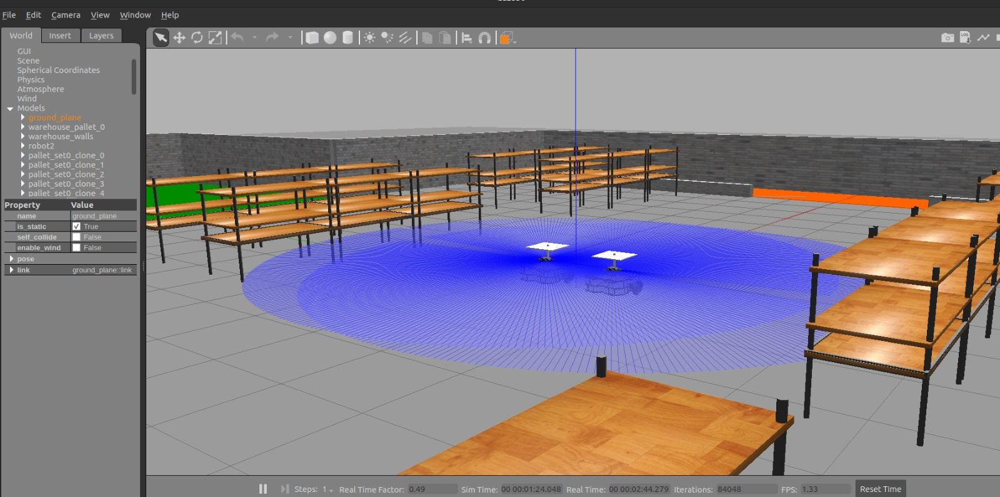

2x !
Issues Resloved:
#10 Gazebo Import #7 ROS2 Amazon Robot model #1 ROS2 planning system example bugfix
Week 10 blog
Last week we almost completed our brand new Amazon Robot exercise in Jderobot Academy, except for one very essential component: The lift. For our exercise to work as expected, we need to make sure that our lift can actuate and carry pallets to their places. This is also quite important for the next exercise for multiple robots.
Gazebo model fixes and writing action plugin
One of the problem that we were facing was the lift_joint kept dropping on the floor. If you set the type of joint anything other than a prismatic one, it stayed in the place. I found this rather strange and I spent literally days figuring out what is going wrong with this. There are no examples or snippets to help you and the documentation itself is incomplete. Moreover, no one replied to my questions on ROS and Gazebo sim. So I had no hopes about it working. But one day, suddenly, I remembered that maybe adding <physics>, <dynamics> and <ode> tags might do the trick, and it did! I am going to put my lift joint here in case anyone faces the similar problems.
<joint name="lift_joint" type="prismatic">
<parent>link_platform_mid</parent>
<child>lift_link</child>
<axis>
<xyz>0 0 1</xyz>
<limit>
<lower>0.18</lower>
<upper>0.25</upper>
<effort>20</effort>
<velocity>5.89</velocity>
</limit>
<dynamics>
<damping>0.1</damping>
<friction>0</friction>
<spring_reference>0</spring_reference>
<spring_stiffness>0</spring_stiffness>
</dynamics>
<use_parent_model_frame>1</use_parent_model_frame>
</axis>
<physics>
<provide_feedback>1</provide_feedback>
<ode>
<provide_feedback>1</provide_feedback>
<implicit_spring_damper>1</implicit_spring_damper>
<cfm_damping>1</cfm_damping>
<limit>
<cfm>0</cfm>
<erp>0.2</erp>
</limit>
</ode>
</physics>
</joint>
Once that problem was solved, the next challenge was how to actuate this joint. We want to lift up the platform when picking up the pallet and then drop it down when it reaches the goal area. Traditionally, in ROS1, gazebo_plugins are used for this. We apply effort to this joint using a ros service and the plugin handles it. For this we need to make sure that there are <transmission> tags in the model. (If you want more information on how to do that in ROS1, have a look at this file).
But in ROS2, this structure is changed a bit. This sheds more light on how the migration was performed and the changes to respective package. We are interested in applying joint effort, which pushes the link using ros service. I was able to find it’s changelog here. After some digging around, I found a snippet of code in the source file, which worked!
We can actuate the joint using following service. Positive effort to move up and negative effort to return to the position
ros2 service call /apply_joint_effort gazebo_msgs/srv/ApplyJointEffort '{joint_name: "lift_joint", effort: -2.0, start_time: {sec: 0, nanosec: 0}, duration: {sec: 2000, nanosec: 0} }'
Apart from that, I had to make changes in how our model is getting deployed and the urdf for robot state description. In the end now everything works. But the arrangement of the warehouse is slightly not so ideal for our setup. We are using amcl which just tries to localize on given map using probabilistic localisation. For real time moving objects (for example, our pallets) we need SLAM. But moving on for now.
JdeMultRobot
With simple robot exercise is ready to be used, so I turned my focus to the final goal: ‘JdeMultiBot’. For multi robot, we had a lot of discussion over the architecture and it’s implementation over a github issue. The synopsis was follows:
Proposal for Multi-Robot exercise
The purpose of the multi robot exercise is to give student a platform to implement different strategies for task and path planning and subsequently, learn about the new Navigation2 structure. Thus, on the backend, the infrastructure must be set up so that the student has to code only the relevant logic / algorithm in a python function. There are 2 main responsibilities to be performed by the exercise backend:
- Issuing task goals. For example “Transfer pallets no: 2,5,8 from their current location to the pallet storage area”
- Mechanism to monitor overall state of the exercise. i.e. timely record of tasks completed by each robot.
We will be using Navigation2, which uses behaviour trees. We can use it’s planner for path planning and controller for path following. However, we must also define our own task server which issues task goals.
The above mentioned repos can be used for the reference solution. In the beginning only 2 robots will be defined.
The task planning BT node will supersede the existing navigation behaviour tree. On the robot side, we will have a node plugin, for example GetTask which correlates to a node in behavior tree ( for example, get next task, where task is represented as a pose). This will be something similar to the ComputePathToPose which will return the Nav Goal (x,y,z) and if it is a pickup or dropoff. Then then robot can continue with its regular behaviour tree, to plan a path to this goal and navigate, check if it reached and then lift/drop the platform.
But to give the task, a task planning server will be separate and the robot has to query for it. And this server must have already decided which robot has to do which task based on the algorithm. We can give a demo implementation but students can program the server in more elaborate way. The demo implementation can be as simple as picking a random pose out of pallet poses and drop locations.
Nav2 already has planner, controller, recovery servers. We will add a task server. If we launch multiple robots, it already launches multiple instances of Nav2 task. So each robot has his own nav stack. And our server will have the similar structure that of other nav2 servers, for example using Ros actions etc.
and we decided to work on following deliverables:
Deliverables of the project
The Amazon Warehouse exercise will transition to ROS2 Foxy, resulting in two exercises. These exercises are focused in programming navigation and planning algorithms using ROS2, and they can be addressed in a sequential manner:
1. Implement the navigation stack on an Amazon Warehouse Robot
ROS2 brings a neat evolution of the Navigation Stack, namely Navigation2. This navigation system works as a stack which is deployed on a robot. It is composed by several action servers (Planner, Controller and Recovery), tied together by means of a customizable Behavior Tree. Depending on the current pose, environment, goal and programmed behavior, the Navigation2 system will provide the suitable trajectory towards the desired destination.
The student will have to implement a Navigation2 BT in the simulated robot, as well as integrate it with the rest of the behavior (lift/drop a pallet).
2. Multirobot coordination
Once the navigation system has been implemented in a robot, the previous exercise can be extended to a multi-robot scenario, where several robots with independent navigation configuration (they might even implement different algorithms and/or plugins in the Navigation2 stack), a central planner will be responsible of assigning the tasks (i.e., move pallet X to zone Y) to different robots. This central planner can leverage on the enhanced asynchronous infrastructure in ROS2 by means of an action server, on a similar approach that for Navigation2 servers. This assignment can be determined by many parameters, implementing approaches such as distance-based assignments, FIFO queues, random assignments, etc.
The task of the student will be to program the assignment strategy in the central planner, determining the criteria for assigning the tasks among the available robots.
Multi Robot Navigation 2
When we launch multiple robots in Nav2, they are assigned their own independent stacks - Which means their own behaviour tree, servers, actions and everything is namespaced. This also means that the resource usage (CPU, RAM) also scales up and it can prove a bottleneck in future. We’ll have to see about that in upcoming weeks. Meanwhile, I’ve started working on the server architecture and I can’t wait to make it awesome! For now, I leave you guys with 2 robots deployed with their nav stacks in our exercise.

Hej då!